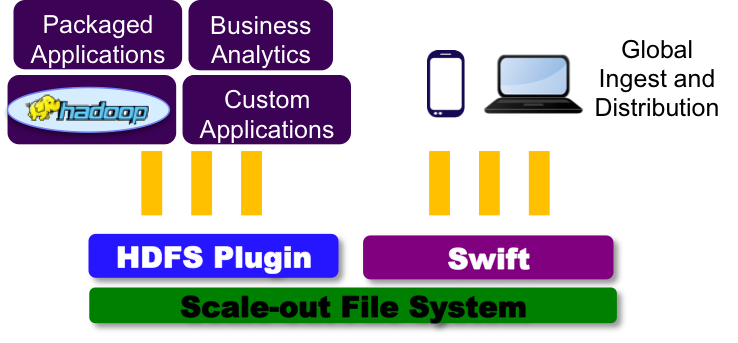

- Problem – Separate storage systems for object ingest/distribution and analysis
- Data duplication and maintenance overhead
- Data consistency
- Lack real-time analysis
- Solution – SwiftonFile
- Decreased time to results
- Run MapReduce directly on objects through native File API
- No waiting for data transfer between storage systems
- Immediately share results
|

|